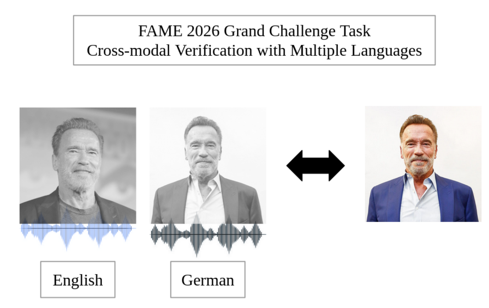
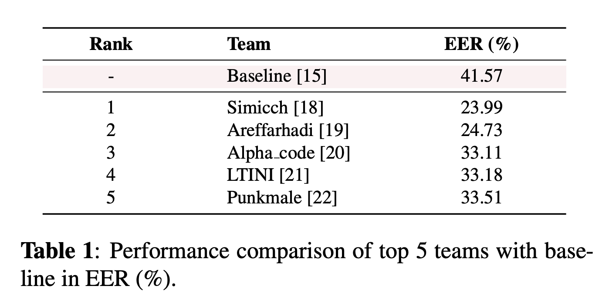
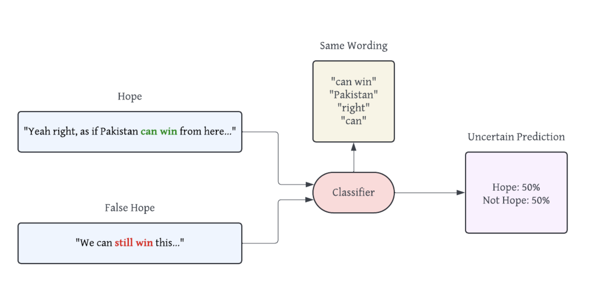
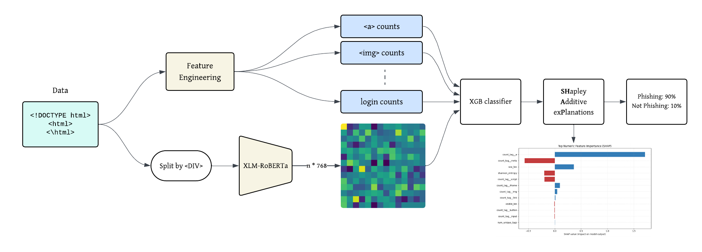
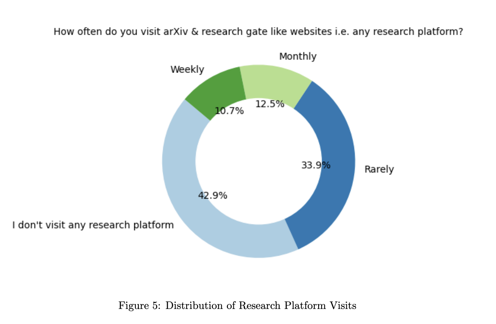
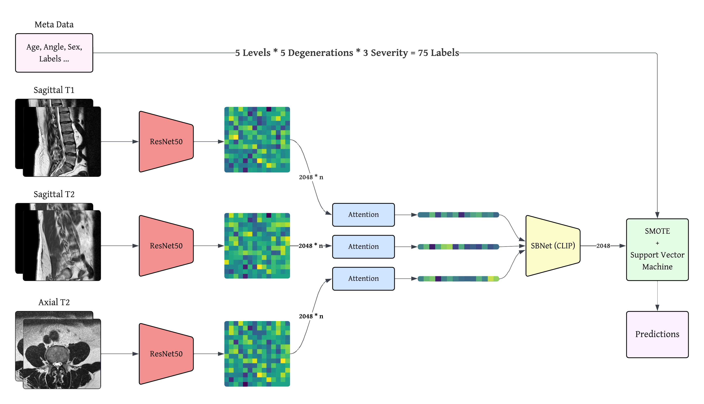
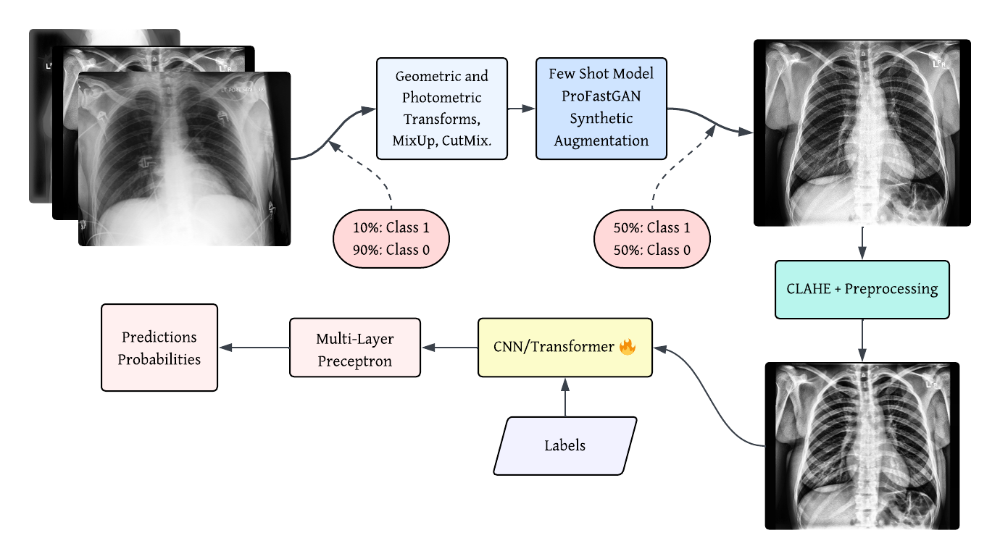

|
Ahmed Abdullah
ahmedembedded [@] gmail.com
l227503 [@] lhr.nu.edu.pk
I am an undergraduate researcher in machine learning and
artificial intelligence at the
National University of Computer and Emerging Sciences
(FAST-NUCES), where I work on machine learning across multimodal
learning, medical imaging, and natural language
processing.
My research focuses on building robust and explainable AI
systems, with applications in radiology, multilingual NLP,
and cross-modal representation learning. I have
collaborated with clinical and academic institutions on
projects in medical imaging and multimodal AI, and have
contributed to peer-reviewed publications in these areas.
Alongside my academic work, I have worked on
production-scale machine learning systems in healthcare
and conversational AI, bridging research and real-world
deployment.
CV /
Resume /
Google Scholar
/
LinkedIn
/
GitHub
/
Undergraduate Thesis
|
|
|
Research
My research focuses on multimodal machine learning,
medical imaging, and natural language processing. I am
particularly interested in building robust and explainable
AI systems that operate under limited data and cross-modal
settings, including face-voice association, radiological
imaging, and multilingual language understanding.
Recently, I have also been working on scalable data
systems and real-world deployment of machine learning
models in healthcare settings. For a full list of
publications please see
Google Scholar.
|
|

|
Linking Faces and Voices Across Languages: Insights
from the FAME 2026 Challenge
M. Moscati, Ahmed Abdullah, et al.
ICASSP, 2026 (Accepted)
arXiv
Large-scale evaluation and analysis of multilingual
face-voice association systems under cross-lingual
conditions.
|
|

|
Face-Voice Association in Multilingual Environments
(FAME) 2026 Challenge Evaluation Plan
M. Moscati, Ahmed Abdullah, et al.
ICASSP, 2026 (Accepted)
arXiv
Benchmark design and evaluation framework for multilingual
multimodal identity association.
|
|

|
GHaLIB: A Multilingual Framework for Hope Speech
Detection in Low-Resource Languages
Ahmed Abdullah, S. Fatima, H. Mahmood
ACIT, 2025 (Accepted)
arXiv
A multilingual transformer-based framework for hope speech
detection across low-resource languages.
|
|

|
MExPhish: A Multilingual Explainable Framework for
Phishing Site Detection using RoBERTa
Ahmed Abdullah, I. Zia, M. Kashif
ICIT, 2026 (Accepted)
An explainable multilingual phishing detection system
using transformer-based language models.
|
|

|
Research Decline and Retraction Surge in Pakistan: A
Critical Examination
Ahmed Abdullah, B. Ahmed, I. Ali, et al.
Preprint, 2024
Authorea
An empirical analysis of publication trends, retractions,
and research integrity patterns in Pakistan.
|
|

|
LumbarNetPlus: Lumbar Spine Degeneration Classification
Using Pseudo Multimodal Learning
Ahmed Abdullah, I. Ali, et al.
Submitted to MIUA, 2026
Pseudo-multimodal learning framework for lumbar spine
degeneration classification using radiological imaging.
|
|

|
ProFastNet: A Progressive-Fast GAN Enhanced Network for
Thoracic Disease Recognition
Ahmed Abdullah, S. Fatima
Submitted to ICIT, 2026
GAN-based augmentation framework for thoracic disease
recognition under limited data regimes.
|
|
Service
|
Conference Organization :
IEEE ICASSP FAME Challenge 2026 –
Organizer
Face-Voice Association in Multilingual Environments (FAME)
Academic Teaching :
Teaching Assistant – Computer Organization
and Assembly Language (EE2003), FAST-NUCES
Laboratory Assistant – Object Oriented
Programming (CS1002), FAST-NUCES
Community Leadership :
Community Lead – Google Developer Student
Clubs (FAST-NU Lahore)
Co-ordinator – Google AIFest, FAST-NU
Lahore
|
This guy is good at
website design.
|
|
{kind=link}